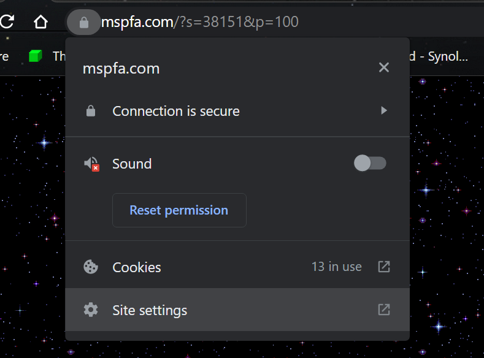
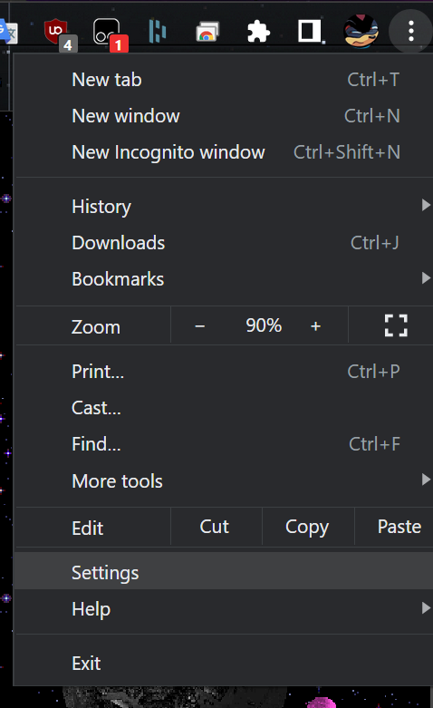
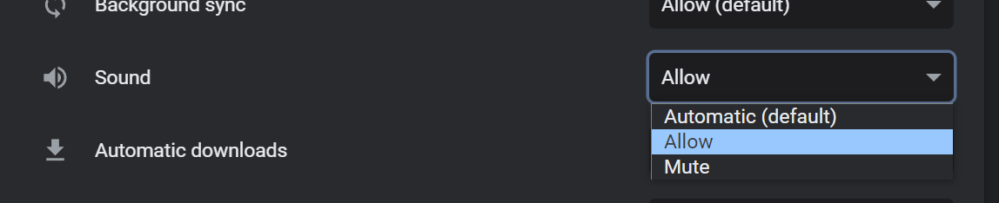
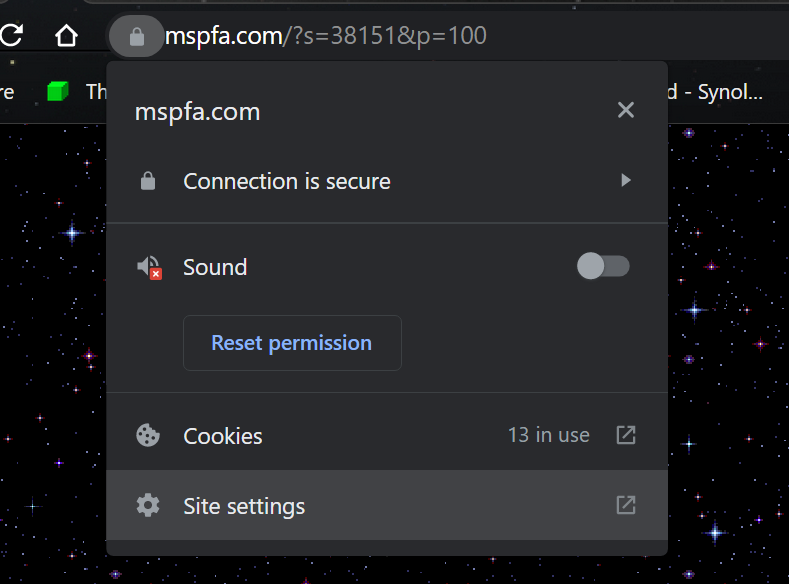
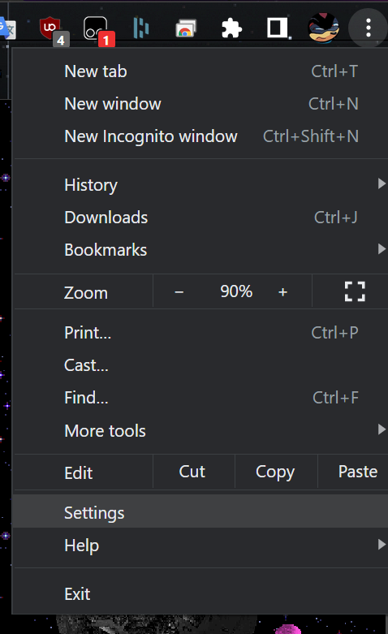
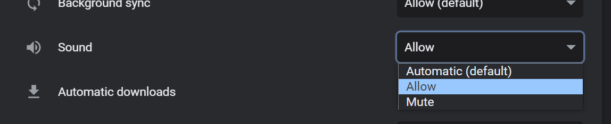
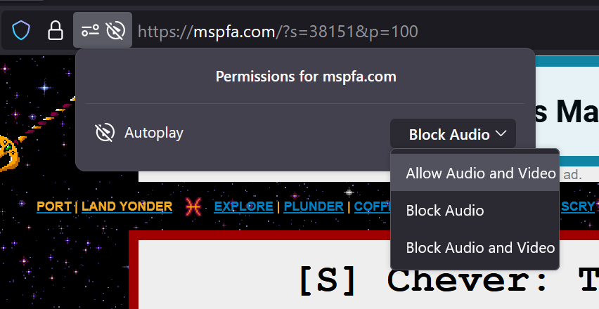
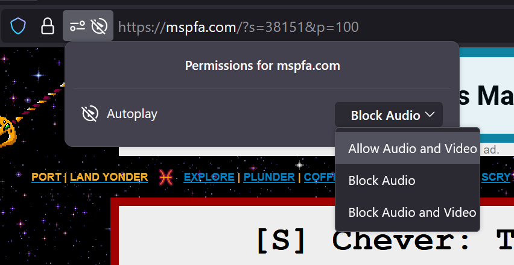

==========================
 BROWSER SETTINGS AND INTERACTIVE CONTENT
BROWSER SETTINGS AND INTERACTIVE CONTENT
==========================
My main tool when making my fancy animations is Google Web Designer. Due to security reasons,
most
browsers don't like it when an HTML5 container begins auto playing.==========================
There is not much that can fix that other than doing a little tweaking in your browser setting. Just follow these nifty instructions for the browser of your choice! (At least the ones I actually have installed... message me if your browser isn't in this list and want it included.)
If you look next to your web address, you'll see a padlock. Click on it and click on
"Site
Settings" (You can also click on the 3 dots in the corner and head to Settings > Privacy
and
Security > Site permissions and find your site.)
 
From there, Find Sound and click the drop down menu. Pick aloow then go back to your page and refresh!

 
From there, Find Sound and click the drop down menu. Pick aloow then go back to your page and refresh!

If you look next to your web address, you'll see a padlock. On the right of it will be
another button, click on it and you will see some site permissions.
In the drop down menu for Autoplay, chose Allow Audio and Video and refresh you page!

In the drop down menu for Autoplay, chose Allow Audio and Video and refresh you page!

More browsers to be added soon...